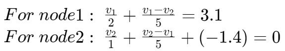
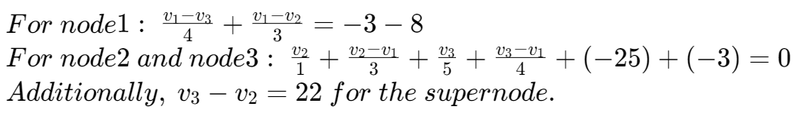

节点分析 | Nodal Analysis
Essential node
连接三个或更多电路元件的节点被称为 essential node。
Nodes with three or more connections are called essential nodes.

Nodal Analysis 使用
选择具有较多连接的节点为参考点（接地点）
Choose a node with many connections as reference node

列式技巧：将当前计算的节点假设为较高电位，将流出的电流放在等式左侧，流入电流放在等式右侧。

对于存在电压源的电路
对于存在电压源的电路，由于经过电压源的电流无法计算，则将电压源两侧的节点视为一个节点，此节点为超节点（supernode）。
例题


对于超节点作为参考点的情况：

因为 node4 为参考点，node2 与 node4 之间有 10V 的电压提升，故 node2 的电压为 10V。
接下来的步骤便如之前所示。